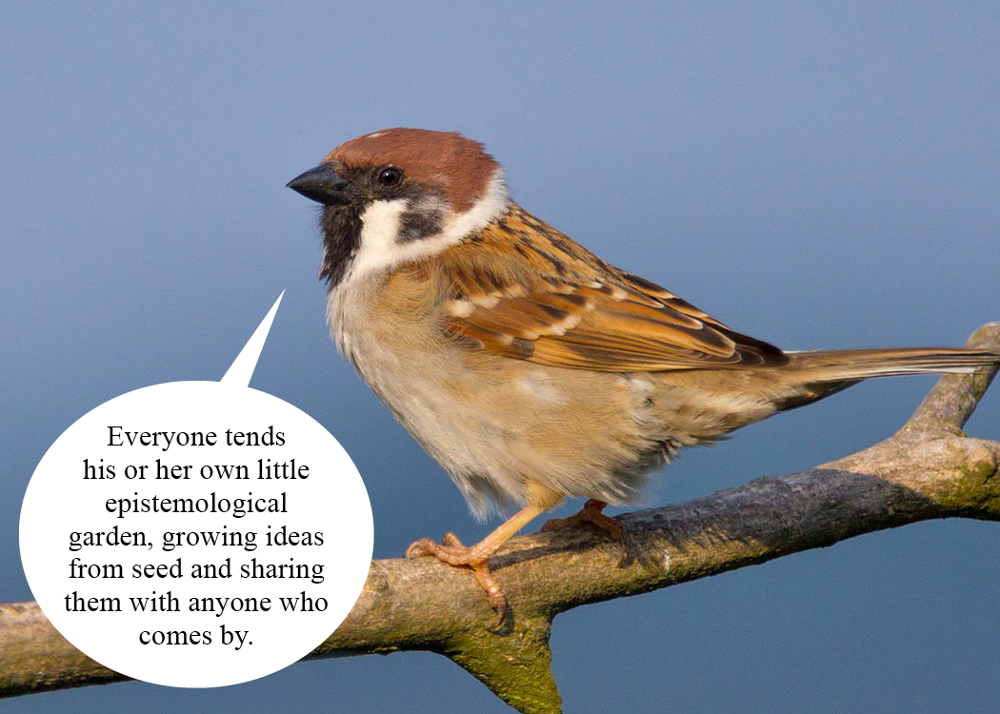

“Gardens … lie between farmland and wilderness … The garden is farmland that delights the senses, designed for delight rather than commodity.” — Bernstein
We live in an information age. The amount of data we produce far outweighs what we consume, so much so that it has extended far beyond our ability to make meaningful use of it. Even our modern day search systems seem to be falling apart under the stress of today’s overwhelming flow of data with the quality of our search engines degrading from all of the SEO hacks, paid advertiser content, and clickbait headlines.
Over the past year, I’ve slowly found processes that have worked well in creating a little curated corner of the Internet, rich with wonderfully curious people exploring exciting ideas.
What is digital gardening?
A digital garden is not a file cabinet, nor is it fully an index. A digital garden is less so a well-kempt plot for farming and more a mess of entangled growth. It is a network of interconnected ideas and thoughts, clustered by how they are associated with each other.
This is not because I don’t like order, but because I think a dash of chaos and entropy is good for new ideas. They help connect two separate ideas that you normally would not have associated with each other, and to imagine the ‘what if’ more frequently.
But there is also a philosophical basis for this which to me is quite practical. A pretty good master analogy is that it’s an attempt to make a big stew pot out of my brain – there is tremendous value in allowing all of these notes and ideas and observations to stew and ferment in there. For me, the real power comes when ideas intermingle and I’m able to discover connections that I truly could never have dreamed of under normal conditions.
Robin Sloanon Rhizomatic notetaking
My goal with a digital garden is not purely as an organizing system and information store (though it works nicely for that). I want my digital garden to be a playground for new ways ideas can connect together. As a result, existing formal organizing systems like Zettelkasten or the hierarchical folder structures of Notion don’t work well for me. There is way too much upfront friction that by the time I’ve thought about how to organize my thought into folders categories, I’ve lost it.
Many try to organize their lives through note taking. There is a classic “top down” vs “bottom up” design tension projected onto how people take notes. Some people trust their ability to predict the future, they want top-down, they want to pave the paths in the garden. Others (normally those that have tried and failed) don’t trust their own ability to predict the future, they want to make it possible for the cows to roam safely, then pave the desire paths after they form.
This is the problem with the file cabinet: it focuses on efficiency of access and interoperability rather than generativity and creativity. Thinking is not linear, nor is it hierarchical. In fact, not many things are linear or hierarchical at all. Then why is it that most tools and thinking strategies assume a nice chronological or hierarchical order for my thought processes? The ideal tool for thought for me would embrace the messiness of my mind, and organically help insights emerge from chaos instead of forcing an artificial order. A rhizomatic, not arboresecent, form of note taking.
The garden is the web as topology. Every walk through the garden creates new paths, new meanings, and when we add things to the garden we add them in a way that allows many future, unpredicted relationships.
How I garden
Digital gardens focus not on being a definite source of truth, but rather a source which is constantly evolving as your own knowledge grows and changes
My first blog made me scared of posting. I was scared of putting things into the public because I was anxious about all the different ways people could perceive it, both in the present and in the future. What if I posted something that people thought was stupid? Maybe somebody would see my current work in the future and look down on me for how naive my thinking was. But honestly, the more I wrote and just put things out there, the less that line of thinking made sense.
I, by and large, write for myself. Writing, for me, is a form of knowledge distillation. It helps to clarify my thinking and condense my knowledge so I can easily articulate it to others. If done well, I have a shareable representation of my thoughts that I can send out into the world and people can respond. Even for my most half-baked thoughts, this helps me create a feedback cycle to strengthen and fully flesh out that idea.
Digital gardening is not just passive knowledge collection. It’s a form of expression and sharing. The goal should be to tap into your network’s collective intelligence to create constructive feedback loops, not to post content that ‘gains clout’ or make you look smart.
“[One] who works with the door open gets all kinds of interruptions, but [they] also occasionally gets clues as to what the world is and what might be important.” — Richard Hamming
Here are some learnings over the past year of digital gardening:
- Link by concept rather than by exact match. I will often explicitly have a
See also: (some concept)link somewhere if I feel two subjects are closely associated. Linking new knowledge to existing knowledge makes it easy to remember. This has helped me find really cool connections on numerous occasions. - Name notes to be as simple as possible. I prefer using verbs or nouns to make it easier to link concepts and thoughts.
- Good search matters a lot. When I search, I usually don’t know the exact name of the thing I’m looking for, otherwise, why would I be searching for it in the first place? I use search as an entry-point into a single node, then recall by associativity rather than by indexing. But having a good entry-point can make or break my flow into finding what I’m looking for.
This is still a process I’m refining to this day. Likely, my learnings will have grown by the next time around when I rewrite this again.
Knowledge Flow
I don’t read everything I come across. I am at a point where I am constantly bombarded with new and interesting things from my Twitter Feed, Curius, friends, Slack groups, Discord Servers, Telegram DMs, and so much more.
Despite my manic page parking, I really only get time to read about 30% of content sent my way. Even among those 30%, I probably only have meaningful thoughts and connections with about half of those.
I’ve started developing a process to better manage my process for information intake.
Seeds
I am a person who needs a very low friction way to dump new ideas and things to look at in the future.
I built TabSpace to be a ‘scratch space’ in my new tab page where I have my running list of todos, temporary thoughts, and things to read in the next little bit. It’s the Apple Notes for my laptop.
I tend to generally bookmark things for later then revisit them when I have time. For projects, writing, and all sorts of reading. Even when reading books, I don’t like to take complex notes right away will only bookmark or highlight phrases. I will eventually come back to the bookmarks a second time to generate insights and actual thoughts. It feels like this weeds out unnecessary noise and provides a natural chance for spaced repetition.
These are the seeds that form the basis of ideas and thoughts.
Saplings
Saplings are single nodes or thoughts. When linking notes, I generally do not silo notes into categories. Sometimes, the presence of specific ‘folders’ or ‘topics’ prevents us from making surprising connections between otherwise related topics (for example, urban planning and data structures).
Fruits
Of course, a knowledge index isn’t much use if it doesn’t inform future thinking and output. Fruits are what I like to call derivative or ‘new’ pieces of content.
It’s the act of creating ‘newer’ work from saplings, mostly longer form essays, projects, etc. At this stage, thoughts and ideas have matured enough to be able to share and collaborate. Right now, traditional ’tools for thought’ are not great for this aspect, lacking the ability to publish, edit, and share notes with others.
Start your own
I’ve found having my own digital garden has been immensely helpful. It’s created a playground for me to experiment with writing, have an excuse to read, learn, and share with others, and be less scared of putting this out into the public.
Through tending to this garden in public, I hope to show my success, failures, and everything in between and offer it as an open garden to learn from for anyone who stumbles upon it in the future. If just one person is inspired by it, learns from a mistake I made, or builds off of my work, then I would consider this garden a success.
Maybe you’ll find this as an incentive to start your own.
I’d like digital garden to be like a bonsai tree. Carefully growing, trimming, pruning, artfully shaping a beautiful tree of resources and ideas
 ‘Everyone tends his or her own little epistemological’ garden, growing ideas from seed and sharing them with anyone who comes by.